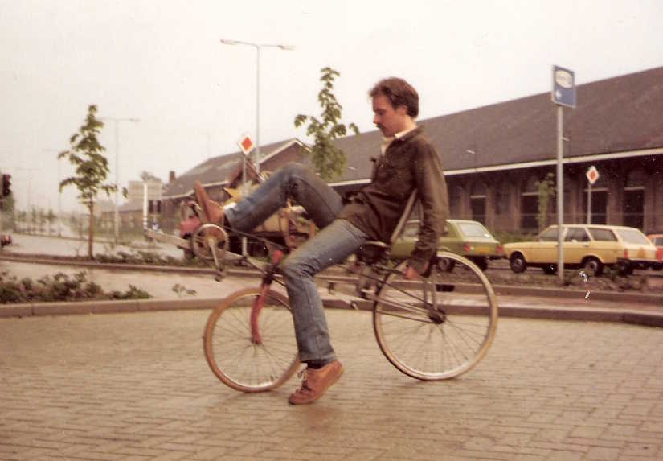

Around 1984 recumbent bicycles were a new rage. You could rent early models for a day, but of course I had no money to speak of, so buying one was out of the question and really not much fun either.
I made endless sketches of the best way to run the chain, and for keeping the rider more or less horizontal for low air resistance. I also needed the bike to be very short because student housing was tight too.
I collected my parts from a dumpster. I used a scrap normal rear wheel and chain, and the front wheel of a broken children's bike. A friend welded up the frame for me, from some square tubing.

I turned the front fork backwards for stability because it gave a long trail, and I had noticed other recumbents having twitchy steering, which is problematic with a low CG. I was even trying to achieve hands-off steering. This is easy and fun on a normal bike, but difficult on a recumbent because you cannot shift your weight around when leaning against a backrest, like you can in a saddle. It worked, almost.
The nice thing about being in a seat is that you have excellent forward vision without having to strain your neck, and there is no saddle pain. Viewing to the rear however, by looking over your shoulder like on an normal bike, will not work when you are reclining against a backrest. This can only be solved by having a small dentist's mirror sticking out of your glasses like an insect's antenna, or by taking the plunge hoping no one is overtaking you, which is unwise.
Recumbents are also dangerous because they are lower than normal bikes, and cars routinely overlook them. Ergonomically the bad thing is that in a steep climb you cannot get out of the saddle and "stand on the pedals". Sitting in a seat, all the force has to come from pushing forward on a pedal while bracing the trunk against the backrest. This is painful on the knees, and if you lose speed you fall sideways which is a bad idea when your feet are high up in the air.
I crossed the chain so I could ride forward while pedalling backward, because I felt that it was easier on the knees when gravity helps the knee going down on the push stroke. I believe it worked, but it does feel a bit unnatural.
The steering bar was under the seat, connecting to the front wheel by a short pushrod. This gave a very comfortable riding position, with the arms hanging down fully relaxed.
All things considered, the whole thing actually worked quite well. It had no gears, but it could climb steep bridges and even narrow dirt roads in local small hills without toppling over. And it could coast down long descents at scary speeds, without ever experiencing shimmy or other steering trouble.
I learned a hard psychology lesson from this bike.
While most recumbents were greeted with at least mild interest, mine attracted a lot of negative feedback. The main objection was that "bikes are made from round tubes, otherwise it's not a bike". I felt then ( and frankly, still do.. ) that this was a really stupid comment to make, but many people made it anyway.
Pedalling backward was considered silly and counterintuitive, and people refused to even try it. Also, they felt that the front fork was "obviously fitted the wrong way around", like they were the first to notice this glaring error which I might have missed myself. It probably didn't help that I myself was unassuming to the point of arrogance, and refused to dress up to the occasion or hold sales pitches.
I never got much traction with this bike. Since it lived at the friend's house in the Limburg hills 200 miles from my home in Amsterdam, I rarely had an opportunity to even ride it myself.
At the same time, another friend built a successful business in stage props, and from him I learned that a prototype can be simple, but it has to look neat. He spray painted all his products an even black, and if he put on tires or cables, they would have to be new. His props looked like they came from a real factory. He used, in fact the same square tubing I had done ( if only because I made some of his designs for him ). But in shiny new black instead of flaky old rust, I think people didn't even notice that it was iron tubing in the first place. They just assumed his designs were solid.
You cannot expect people to look past a first impression. If you want to sell a house, put a vase of flowers on the table. It isn't even cheating. You cheat yourself out of a sale if you don't.
Ever since, I have made a point of giving prototypes decent, explanatory colors, and nice parts. If you don't hear any comments on the prototype itself, just on what it feels like to use it, then you have achieved your goal.
And I have always been careful to introduce at most one new feature per prototype. If you introduce two or even three, you will only get feedback on the one that people don't like, and the chance of introducing a good feature happens only once. You get only one opportunity to make a first impression.
To this day I am a member of the oddly named "Nederlandse Vereniging voor Human Powered Vehicles" ( "Dutch Society for ligfietsen" ).
At one point I was invited to give a lecture on streamlining so-called "tadpole" bikes at their yearly symposium. These teardrop shaped, enclosed "velomobiles" look a bit like swimming frog larvae, hence the name. Usually they have two steering wheels in front with the pedals in the middle between them, and one chain driven wheel in the rear.
I spent quite some effort on this, only to be told at the day of the meeting that the audience were more interested in training schedules than in aerodynamics, and so I was excused. Like my wife always says, if you give something away for free, people will assume it has no value.
For those interested, the writeup I did ( in Dutch, I'm afraid, but it does have pictures ) can be found here : tadpole bike streamlining, 2008 .
An interesting point which concluded my streamline writeup was that a high speed tadpole bike should not have rotating cranks, but back-and forth pedals on hanging levers with tierods to the actual crank set, probably with a slight quick-return geometry. This keeps the feet moving almost horizontally over the cabin floor, keeping everything low including the knees, and the pushing leg is almost straight in the power stroke, allowing maximum force without standing on the pedals.
It also makes for a sleek, low-slung nose as opposed to the bulky, rounded nose surrounding the rotating crankset that these bikes normally have.
I believe that this is anatomically superior, but that is just a gut feeling. Anatomy is not my province. But I know for a fact that the low nose will give superior streamlining ( better nose shape, less wetted area, reduced crosswind sensitivity ).
Of course the sports oriented recumbent community were indignant, because the mechanism is sometimes found in kid's pedal cars which don't even have a chain. Also, efficiency is not as high on their list as one might think. I overheard one of them saying that you should really go to work on a cargo bike, because it gives better exercise.
I guess the whole recumbent movement has become a moot point since much to their chagrin we now have electrical fatbikes, which fulfil every promise the HPV movement ever made. The whole thing is clearly a rearguard, losing battle. My one excuse to put it on this website is that I am a sucker for dead ends and lost causes.